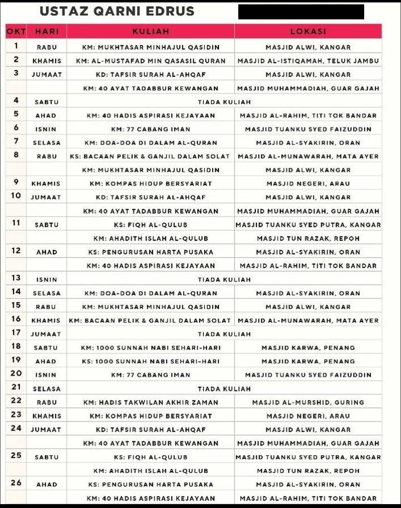

Jadual Kuliah dan Ceramah Bulanan
Perhatian: Jadual ini adalah jadual am dan mungkin berubah mengikut kesesuaian Ustaz. Ia disediakan untuk rujukan tetapi mungkin tidak sepenuhnya tepat kerana Ustaz boleh membuat perubahan mengikut keselesaan atau ketersediaan beliau.

Jadual ini menunjukkan rancangan kuliah dan ceramah Ustaz Qarni Edrus untuk bulan ini. Kuliah-kuliah ini merangkumi pelbagai topik berkaitan Islam termasuk:
Setiap kuliah disediakan dalam bentuk video dan terdapat juga sesi interaktif langsung secara dalam talian. Untuk kemas kini terbaru mengenai jadual kuliah, sila semak platform rasmi Ustaz Qarni Edrus.
Anda boleh mengikuti kuliah-kuliah Ustaz Qarni Edrus melalui: